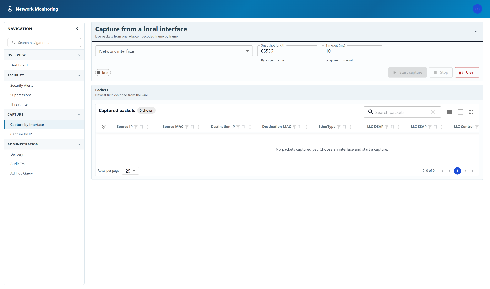

Packet capture
Live packets from one adapter, decoded frame by frame.

Starting a capture
- Choose a Network interface. The list comes from the capture driver on the server, not from your own machine.
- Leave Snapshot length and Timeout as
they are unless you have a reason:
- Snapshot length is how many bytes of each frame to keep. The default of 65536 keeps whole frames; lowering it truncates payloads and can hide what a detector needs to see.
- Timeout is the pcap read timeout in milliseconds.
- Click Start capture. The status chip changes from Idle, and decoded packets appear newest-first as they arrive.
- Stop ends the session. Clear empties the table without stopping.
Capture by IP is the same screen with an address filter, for when you already know which host you are interested in.
What you will actually see
A capture only sees the traffic that reaches the machine it runs on. On an ordinary workstation that is its own traffic plus broadcasts — enough for ARP and new-device detection, and not much else. Seeing a whole segment needs the switch configured to mirror traffic to this machine (a SPAN port) or a network TAP.
Detection does not depend on this screen. Findings are raised from whatever traffic the server is processing, whether or not anybody has a capture open in a browser, and a flow collector feeds detection with no capture at all.
Any signed-in account can view the interfaces and the packets already captured. Starting, stopping and clearing a capture are restricted to administrators — a capture puts an interface into promiscuous mode and reads other people's traffic, which is not something every account should be able to begin.